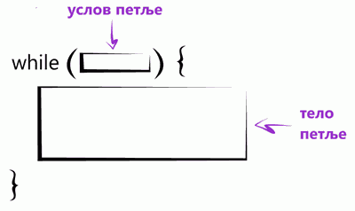

Петље у Јава-скрипту¶
Петље су наредбе које омогућавају понављање других наредби. То значи да су петље сложене наредбе, које у себи могу да садрже друге наредбе. Свако понављање тих наредби садржаних у петљи називамо итерацијом. Уместо речи петља често се користи и реч циклус (у програмирању су овде речи синоними).
У језику JavaScript постоји више врста петљи, а сада ћемо упознати неке од њих.
While петља¶
Општи облик while наредбе је:
while (услов) {
тело
}
Ова наредба дословно значи: „док је испуњен услов, извршавај тело”. Овде услов представља било какав израз логичког типа, дакле нешто што је тачно или нетачно (има вредност true или false), а тело представља једну или више било којих наредби језика JavaScript. Ако је у телу петље само једна наредба, витичасте заграде могу да се изоставе, али је уобичајена пракса да се не изостављају.
Наредба понављања while је веома слична наредби if. Разлика је у томе што у наредби while понављамо наредбе док је услов испуњен, а у if наредби извршимо те наредбе само једном ако је услов испуњен.

{kind=link}
Пример - збир непарних двоцифрених бројева
Написати програм који прихвата цео број и израчунава збир свих непарних бројева до задатог броја.
Ево како задатак можемо да решимо помоћи петље while:
Прво смо поставили почетне вредности за први непаран двоцифрени број (11) и збир (на почетку је нула). Пошто се унесе број који представља границу, у while петљи се пре сваког додавања броја на збир проверава да ли је непарнан број и даље мањи од границе. Ако јесте, настављамо да извршавамо наредбе између витичастих заграда - тренутни непаран број се додаје на збир, а сам број повећавамо за два.
For петља¶
Општи облик петље for је:
for (иницијализација; услов; корак) {
тело
}
Овако написана for наредба ради исто што и
иницијализација
while(услов)
{
тело
корак
}
Значи, прво се извршава наредба коју смо овде назвали иницијализација, затим се проверава услов и док год је он испуњен, понављају се тело петље и наредба коју смо назвали корак. Према томе, претходни задатак можемо да решимо и овако:
Овај облик петље for је постао уобичајен и постоји већ дуго у разним програмским језицима, на пример C, C++, C#, Java и другим. У језику JavaScript поред облика петље for који смо управо упознали, постоје и посебни облици петље for, који служе за извршавање одређених наредби над сваким елементом сложене променљиве.
Посебни облици петље for¶
За итерирање кроз елементе низа користи се петља for-of, која има овај облик:
for (променљива of низ) {
наредбе
}
Овде променљива узима редом вредности елемената низа, а наредбе се извршавају по једном за сваку од тих вредности. Ово је илустровано у следећих неколико једноставних примера:
За итерирање кроз поља објекта користи се петља for-in, која има овај облик:
for (променљива in објекат) {
наредбе
}
Овде променљива узима као вредности редом називе поља објекта, а наредбе се извршавају по једном за свако од тих поља. Ево како то изгледа на примеру: